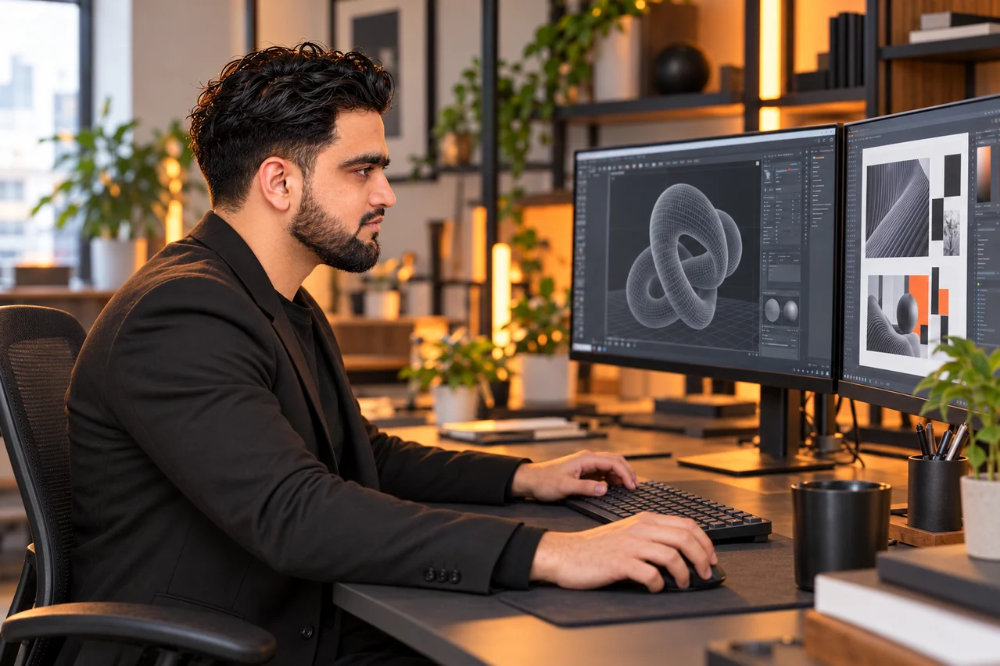
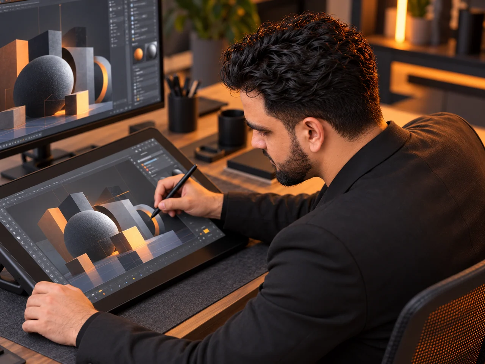

Image to 3D Studio
Software & Games / Design & UI
03 viewsExplore case studyI’m a designer who moves between disciplines. I shape the visuals, bring them to life and build the software that makes an idea work.
I turn ideas into clear visual systems and intuitive interfaces, from graphic layouts to complete screen flows.
I shape footage into compelling stories, combining precise editing, visual effects and compositing with a strong sense of pace.
I build and compose objects, environments and spatial concepts, bringing form, materials, lighting and camera work together.
I give graphics, objects and scenes movement, using timing and motion to explain an idea, set a mood or tell a story.
I use vibe coding and iterative development to build capable software with clean interfaces, from creative tools to complex applications.
I connect design, play and technology through games, touch-screen experiences and installations that invite people to take part.
Interfaces to explore. Spaces to step into. Experiences to play. Discover the thinking and the details behind the work.
Software & Games / Design & UI
03 viewsExplore case study
Rendering & Composition / Design & UI
01 viewExplore case study
Design & UI / Software & Games
05 viewsExplore case study
Rendering & Composition
05 viewsExplore case study
Design & UI / Rendering & Composition
02 viewsExplore case study
Design & UI / Software & Games / Rendering & Composition
08 viewsExplore case studySIKANDAR RIAZ / RIYADH
Across screens, spaces
and everything in between.
I’m Sikandar Riaz, a Creative Technologist & Multidisciplinary Designer based in Riyadh. I bring visual design and technology together to create work that people can see, explore and interact with.
My practice spans graphic design and UI/UX, interactive event experiences, software, games and web applications. Motion, video and 3D visualization help me connect those digital ideas with space, atmosphere and storytelling.

I move between visual direction, interface thinking, prototyping and scene development, choosing the approach that serves the experience. The common thread is making an idea clear, engaging and usable.

Have a project in mind, a collaboration to explore or a role to discuss? Tell me what you’re working on.
Based in Riyadh, Saudi Arabia
Your name, email and message are processed by Web3Forms to deliver your enquiry. The spam check is provided by hCaptcha.
Send a message directly to my inbox. I’ll reply to the email address you provide.
Prefer email? maliksikander7889@gmail.com